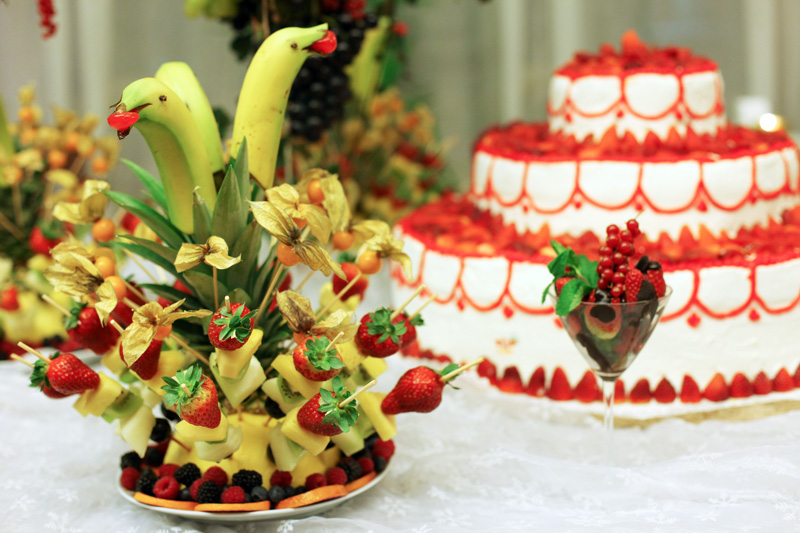
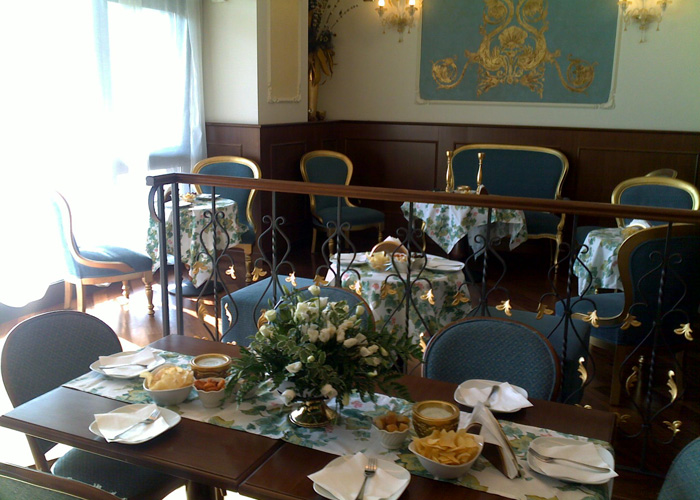
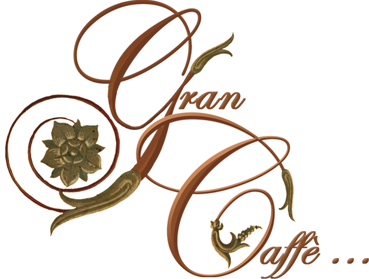
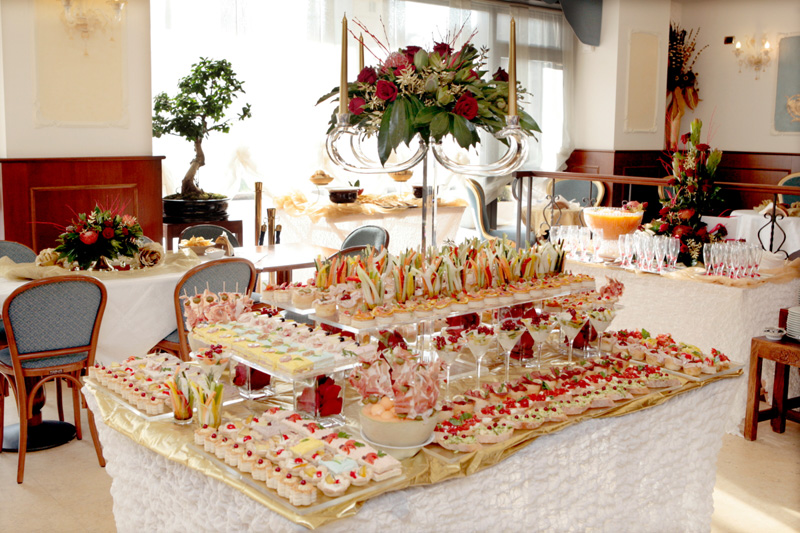
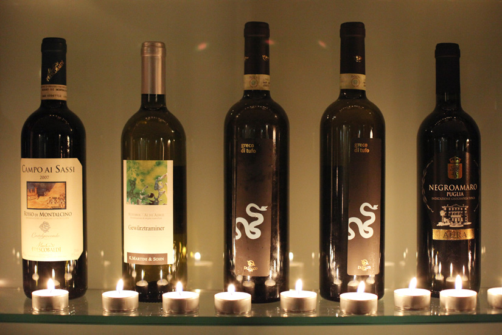
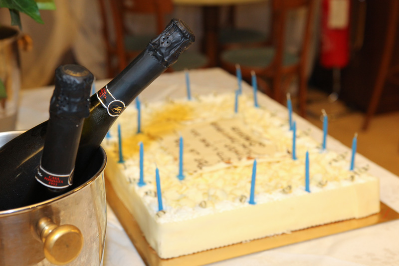
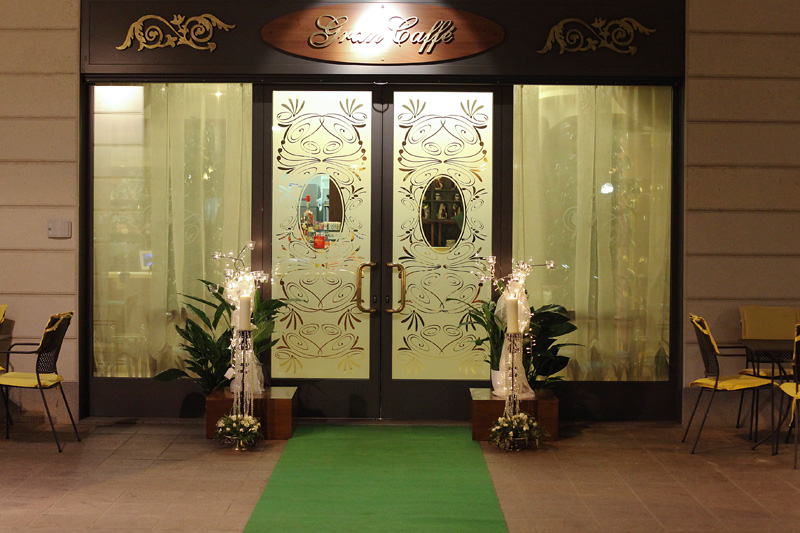

Colazione
Brioche gourmet farcite al momento, bomboloni alla crema, pancake e cappuccino. Anche frolle senza glutine.
Dolci e caffetteria
Colazioni, pranzi e aperitivi a Cusano Milanino
Martedì–domenica 7:00–21:00
Via Mazzini 11 · Cusano Milanino
Il Gran Caffè accompagna la giornata di Cusano Milanino in una sala elegante, tra velluti, stucchi dorati e boiserie. Brioche farcite al momento al mattino, cucina e paninoteca a pranzo, cocktail e taglieri la sera.

«Sospiro d'anima, poesia degli eventi – nei cinque sensi»

Brioche gourmet farcite al momento, bomboloni alla crema, pancake e cappuccino. Anche frolle senza glutine.
Dolci e caffetteria
Primi e secondi del giorno, risotto allo zafferano, tartare di Scottona, insalate, panini, schiacciate e piadine.
La cucina
Cocktail signature, Franciacorta e champagne, il Gran Tagliere di salumi iberici e italiani da dividere in due.
Aperitivo e cocktail
Compleanni, ricorrenze, feste private e aperitivi su misura per gruppi. La sala si presta a una serata elegante: raccontaci cosa hai in mente e prepariamo insieme la proposta.
«Ottime le brioche che riempiono al momento e ottimi cappuccini. Personale giovane e cortese.»
Via Giuseppe Mazzini 11
20095 Cusano Milanino (MI)
| Martedì | 7:00 – 21:00 |
|---|---|
| Mercoledì | 7:00 – 21:00 |
| Giovedì | 7:00 – 21:00 |
| Venerdì | 7:00 – 21:00 |
| Sabato | 7:00 – 21:00 |
| Domenica | 7:00 – 21:00 |
| Lunedì | Chiuso |

La mappa è fornita da Google Maps, che può impostare cookie.